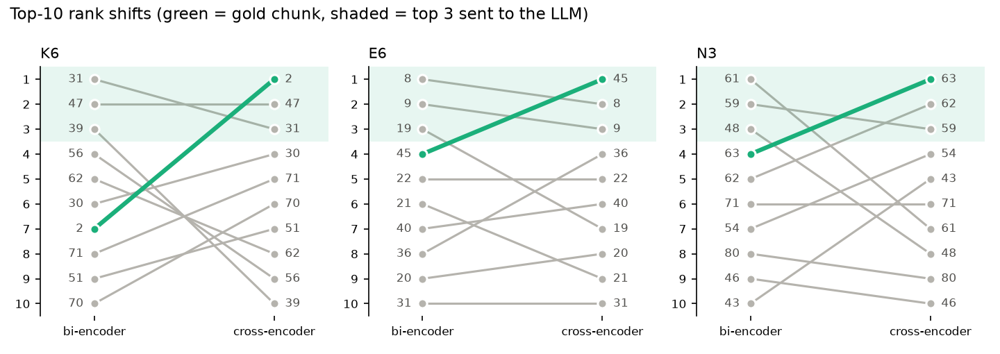
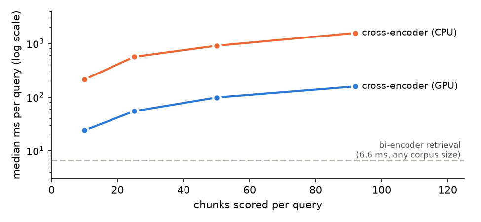

Bi-Encoder Baseline vs. Cross-Encoder Re-Ranking
I used the official 21-page Gazette PDF of India’s Digital Personal Data Protection (DPDP) Act, 2023. It is a good stress test for
retrieval: general duties are qualified by exemptions in other sections (Section 17), penalties sit in a separate Schedule, and many rules are
phrased as negations (shall not
, nothing contained in
). A passage about the right topic often does not contain the rule that decides the answer.
The PDF was parsed block by block with coordinates: running headers were removed, the margin notes (section titles) were attached to their sections, and the three-column penalty Schedule was rebuilt row by row. Chunks never cross a section boundary and are split at numbered sub-sections (max 170 words), giving a frozen corpus of 92 chunks, each prefixed with its chapter and section title. Both pipelines use this exact corpus, the same top-10 candidate list, the same generator and the same prompt, so any difference between Answer 1 and Answer 2 comes only from the ordering of the final three chunks.
| Component | Implementation |
|---|---|
| Bi-encoder + index | all-MiniLM-L6-v2, L2-normalised vectors in FAISS IndexFlatIP (inner product = cosine); top 10 retrieved |
| Cross-encoder | cross-encoder/ms-marco-MiniLM-L-6-v2; scores all 10 (query, chunk) pairs, re-sorted descending |
| Generator | Qwen2.5-3B-Instruct, local GPU (RTX 4060 Laptop), greedy decoding; prompt: answer only from the excerpts, cite sections, otherwise say the context does not answer |
| Evaluation set | 24 queries in plain user language across four failure types (6 keyword trap, 7 exception, 6 negation, 5 buried/cross-reference), each with a manually identified gold chunk and the clause a correct answer must contain |
Q1. Briefly explain the core difference between a Bi-Encoder (independent embeddings, cosine similarity) and a Cross-Encoder (joint self-attention across tokens).
A bi-encoder encodes the query and each chunk separately into one vector each, and relevance is the cosine similarity between them.
Chunk vectors are computed once, offline, so at query time only the query is encoded and an index lookup is done. This makes it cheap enough to search the whole corpus.
The weakness is the compression: a whole passage becomes a single point, so two passages on the same subject land close together even if only one states
the exception, prohibition or number being asked about. Small but decisive words such as not
, except
or unless
barely move the vector.
A cross-encoder takes the query and one chunk together as a single input ([CLS] query [SEP] chunk [SEP]). Self-attention lets every
query token attend to every chunk token, so the model can match prohibited
against shall not
or fine
against penalty
, and it outputs one relevance score for the pair.
It is more precise, but nothing can be pre-computed: every (query, chunk) pair needs its own forward pass at query time. The two are therefore used in
sequence: the bi-encoder gives recall over the whole corpus, and the cross-encoder gives precision on a short list. The re-ranker can only re-order what the first stage retrieved.
Bi-encoder (all-MiniLM-L6-v2) | Cross-encoder (ms-marco-MiniLM-L-6-v2) | |
|---|---|---|
| Input | query and chunk encoded separately | query and chunk in one sequence |
| Where they interact | only at the end, through the cosine of two 384-d vectors | in every layer, through self-attention across all tokens |
| Pre-computable | yes: chunk vectors built once (446 ms for all 92 chunks) | no: a new forward pass for every (query, chunk) pair |
| Work per query | 1 encoding + index search | 1 forward pass per candidate |
| Good at | finding the right topic across the whole corpus | judging whether a passage actually answers the question |
| Metric | Baseline | Re-ranked | Change |
|---|---|---|---|
| Hit@1 | 0.458 | 0.708 | +0.250 |
| Hit@3 (gold chunk reaches the LLM) | 0.667 | 0.792 | +0.125 |
| MRR@10 | 0.589 | 0.743 | +0.154 |
| Recall@10 | 0.792 | 0.792 | 0 |
| Outcome (gold-chunk rank) | Queries |
|---|---|
| Fixed: outside top 3 → inside top 3 | 3 |
| Hurt: inside top 3 → outside | 0 |
| Both already in top 3 | 16 |
| Out of reach: not in the top 10 at all | 5 |
Hit@3 is the metric that matters most here, because only three chunks reach the LLM: after re-ranking, the gold evidence is in the context for 79.2% of queries instead of 66.7%. Recall@10 is identical by construction, since re-ranking changes the order of the ten candidates but not which ten they are. By category, Hit@3 rose from 0.83 to 1.00 for keyword traps, 0.86 to 1.00 for exceptions and 0.67 to 0.83 for negations, but stayed at 0.20 for buried/cross-reference queries, where the problem is first-stage recall rather than ordering.
Q2. Document the rank changes for the failure queries, and compare LLM Answer 1 vs. Answer 2: did the baseline generate a hallucination, omit an essential clause, or misstate a rule because the critical chunk sat outside the top 3?

Figure 1. Top-10 candidates before (left) and after (right) cross-encoder scoring; the gold chunk is green, and the shaded band is the top 3 sent to the LLM.
| Query (type) | Gold rank | Why the baseline missed it | Answer 1 (baseline) vs. Answer 2 (re-ranked) |
|---|---|---|---|
N3 (negation)What is the Board prohibited from doing when it inquires into a company? | chunk 63 #4 → #1 |
The baseline top 3 were s.28(1), s.27 and s.18, which describe what the Board can do. Same topic, so their vectors are close; the shall notin s.28(8) has little effect on the embedding. |
A1: refusal (the provided context does not answer this). A2: correct: may not prevent access to premises or seize equipment that affects day-to-day functioning, s.28(8). |
E6 (exception)Does the Act apply to personal data used for research or statistics? | chunk 45 #4 → #1 |
The general rules (s.3 Application of Act, s.4 Grounds for processing, s.7) share the words Act, apply, personal data; the exemption in s.17(2)(b) is phrased differently. |
A1: refusal, speculates that research could fall under legitimate uses. A2: partial: cites the s.17(2)(b) exemption correctly but opens with Yes, the Act applies…. The polarity is inverted even though the right clause was in the context. |
K6 (keyword trap)From what age is a person no longer treated as a child? | chunk 2 #7 → #1 |
s.9(5) (the government may notify an age above whicha fiduciary is exempt) matches age+ childlexically; the real answer is the definition in s.2(f), inside a dense chunk of seven definitions. |
A1: refusal. A2: wrong: still answers from the s.9(5) distractor and says the Act sets no age, although has not completed eighteen yearswas in its context. |
K1 (keyword trap)Maximum fine if a company fails to protect user data from a breach? | chunk 90 #1 → #1 |
Gold chunk ranked first in both; the other two chunks differ (baseline: s.33(2) penalty factors + s.8(5); re-ranked: s.8(5) + s.27 Board powers). | A1: wrong: two hundred crore(Schedule row 2, breach notification). A2: correct: Rs 250 crore (row 1, security safeguards under s.8(5)). |
B5 (buried)Do I have to approach the company first before complaining to the Board? | chunk 38 #31 (not in top 10) |
The answer is in s.13(3) (grievance redressal), but the query’s words all point to the Board’s complaint procedure (s.27, s.28, s.31). | A1 and A2: both hallucinate No, you can directly complain to the Board. s.13(3) requires exhausting the company’s grievance mechanism first. |
Did the baseline hallucinate, omit a clause, or misstate a rule? All three occurred. In N3 and E6 the deciding clause sat outside the baseline top 3, so Answer 1 omitted it and refused. In K1 the baseline misstated a numeric rule. In B5 a missing chunk led to a confident hallucination that reverses the law. Re-ranking fixed the first two kinds when the evidence was among the ten candidates. The prompt shaped how failures appeared: because it tells the model to say when the excerpts do not answer the question, most retrieval misses showed up as refusals (6 for the baseline) rather than invented answers. Without that instruction the model would likely have filled the gaps from its own knowledge, and the retrieval failure would have been hidden behind a confident answer. B5 shows that this safeguard is not complete: the wrong chunks looked relevant enough that the model answered anyway.
Retrieval quality is not the same as answer quality. I labelled all 48 answers manually against the expected clause:
| Answer label | correct | partial | refusal | wrong |
|---|---|---|---|---|
| Answer 1 (baseline) | 12 | 4 | 6 | 2 |
| Answer 2 (re-ranked) | 11 | 8 | 3 | 2 |
Re-ranking reduced refusals (6 → 3) and improved four answers (N3, K1, E1, E6), but five got worse (K4, E2, E7, N1 from correct to partial; K6 from refusal to wrong),
so the number of fully correct answers did not increase. In four of those five the gold chunk was rank #1 in both pipelines; only the other two
chunks in the context changed, and the small 3B model drifted toward them. Two lessons follow. Getting the right chunk into the context is necessary but not
sufficient: E6 and K6 show the generator misreading an exemption and a definition that it had. And the rank-level zero hurt
result does not
guarantee zero harm at the answer level.
The recall ceiling. For 5 of 24 queries the gold chunk was never in the top 10 (bi-encoder ranks 11, 29, 31, 50 and 53), so both pipelines failed together.
B1 is a two-hop case: impersonation is a duty in s.15, but its Rs 10,000 penalty is a Schedule row that says only duties under section 15
, with no
word in common with the query. When I widened the candidate pool, re-ranking the top 30 recovered B3 (rank 11 → #1) and B4 (rank 29 → #2), while B1, B5 and N6 stayed out of reach.
Q3. Record and tabulate the runtime of the baseline retrieval vs. the re-ranking pipeline.
| Stage (median of 24 queries × 5 runs) | Median | p95 |
|---|---|---|
| Query embedding (GPU) + FAISS search | 6.6 ms | 10.4 ms |
| Cross-encoder, 10 pairs (GPU) | 20.1 ms | 30.6 ms |
| Cross-encoder, 10 pairs (CPU) | 200.6 ms | 230.4 ms |
| Pipeline 1 retrieval | 6.6 ms | 10.4 ms |
| Pipeline 2 retrieval (GPU re-rank) | 27.4 ms | 38.8 ms |
| Pipeline 2 retrieval (CPU re-rank) | 208.1 ms | 237.1 ms |
| LLM generation (same for both) | 3,047 ms | 6,417 ms |
| End-to-end: Pipeline 1 / Pipeline 2 | 3,054 / 3,075 ms | |
Re-ranking makes retrieval about 4× slower on the GPU (+20.8 ms) and about 30× slower on the CPU (+201 ms). In absolute terms the GPU overhead is only 0.7% of end-to-end time, because generation dominates, so here the accuracy gain costs almost nothing. On a CPU-only deployment, re-ranking would be a noticeable fraction of a second per query. Timings are from one laptop GPU after warm-up; GPU and CPU runs were timed in separate loops because interleaving them let the GPU clock down.
Q4. Why do we not simply run a Cross-Encoder across the entire document collection from the very start?
Because the cross-encoder must see the query and the chunk together, its cost is one forward pass per chunk, paid again for every new query, and nothing can be indexed in advance. I measured it scoring 10, 25, 50 and all 92 chunks: the cost grows linearly, about 1.7 ms per chunk on GPU and 17 ms on CPU.
| Corpus size | CE on all, GPU | CE on all, CPU | Two-stage |
|---|---|---|---|
| 92 (this Act) | 0.16 s | 1.6 s | ~27 ms |
| 10,000 | 17 s | 2.8 min | ~27 ms + ANN |
| 1,000,000 | 29 min | 4.7 h | ~27 ms + ANN |
| 100,000,000 | 2.0 days | 19.7 days | ~27 ms + ANN |

Figure 2. Cross-encoder time grows linearly with the number of chunks scored (log scale).
The bi-encoder moves almost all of its work to indexing time: chunk vectors are computed once, and an approximate nearest-neighbour index (HNSW/IVF) searches millions of them in milliseconds, so the two-stage pipeline always cross-encodes just ten candidates. On this tiny corpus, scoring all 92 chunks with the cross-encoder was actually more accurate (Hit@3 0.917 vs. 0.792), because it cannot miss a chunk the way the first stage did. That advantage cannot be bought at scale. The practical fix is to raise first-stage recall instead: a larger k (as shown with the top 30), or hybrid BM25 + dense retrieval for queries whose wording differs from the Act’s.
On 24 queries over the DPDP Act, cross-encoder re-ranking raised Hit@1 from 0.458 to 0.708, Hit@3 from 0.667 to 0.792 and MRR@10 from 0.589 to 0.743, at a cost of about 21 ms per query on a GPU. It helped most for negations and exceptions, where the bi-encoder ranks same-topic passages above the clause that decides the answer (N3, E6), and for keyword traps (K6). It could not help when the first stage missed the evidence (5 queries, including a hallucination in B5), and better retrieval did not always produce a better answer from a 3B generator (E6, K6, and five answer-level regressions). A retrieve-then-rerank design is the right architecture, but it should be paired with stronger first-stage recall and with answer-level checks for negations and exact numbers. Limitations: one document, 24 queries written and labelled by me, gold chunks and answer labels chosen by a single annotator, a small local generator, and latency measured on one machine.